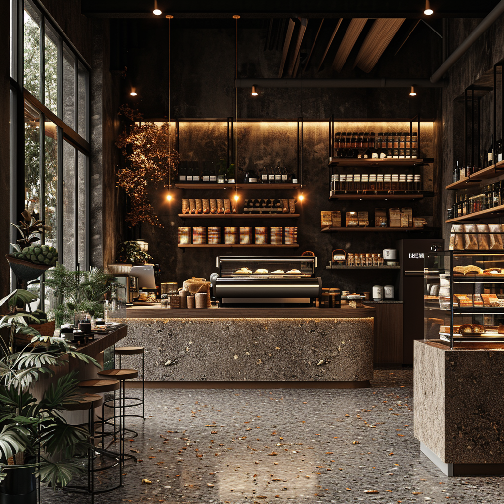

Nuestra Historia
Cafetería Aroma nació con la idea de crear un espacio acogedor donde el aroma del café recién hecho y los postres caseros se convierten en una experiencia única.
Nuestros granos son seleccionados cuidadosamente de cafetales colombianos, tostados de manera artesanal para resaltar su aroma y sabor. Además, ofrecemos una variedad de postres elaborados en casa que complementan la experiencia de disfrutar cada taza.
Creemos en la importancia de un lugar cálido, en el que cada visita se convierta en un momento especial para compartir con amigos y familia.
Conoce nuestro Menú“El café es el abrazo que despierta tus sentidos.”
